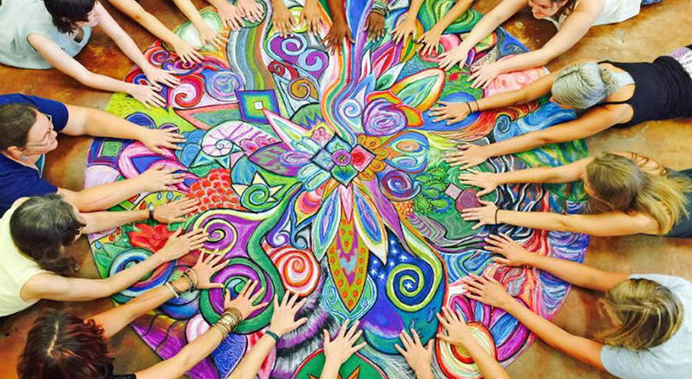
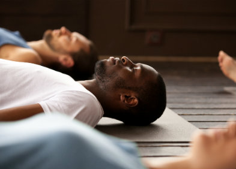

Domaine Renais'sens
" Prendre un temps de réflexion pour mettre plus de sens dans nos actions "
ACCUEIL
A PROPOS
LE DOMAINE
PROGRAMME
ATELIERS
INTERVENANTS
EVENEMENTS
CONTACT
Ateliers
Venez découvrir l'art thérapie pour améliorer votre élan créatif dans divers atelier pour changer votre vision de l'entreprise
But : Bien-être psychologique, prise de décision, productivité et éfficacité, booster sa créativité du au changement, gérer les risques de conflits.

Arts thérapie
Survolez pour découvrir...
Découvrez et pratiquez : le yoga du rire pour vous épanouir pleinement dans votre vie,pour vous permettre de gérer le stress et le bien-être au travail et de développer votre confiance en vous.
But : développer la confiance en soi, travailler le développement personnel , tout en libérant les émotions les plus profondes.
Le Yoga du rire
Survolez pour découvrir...
La sophrologie intégrative propose un processus psychothérapeutique qui implique le corps, le coeur et l’esprit.
But : Elle favorise la pacification du passé, un mieux-vivre avec un corps plus vivant, un esprit plus paisible et un coeur « mieux-aimant» pour soi-même et les autres.

La sophrologie intégrative
Survolez pour découvrir...
Les bienfaits de l’équithérapie ne sont plus à prouver, l’équicoaching est sur le point de réussir son entrée dans le monde de l’entreprise.
But : Les bienfaits de l’équithérapie ne sont plus à prouver, l’équicoaching est sur le point de réussir son entrée dans le monde de l’entreprise.
Equithérapie
Survolez pour découvrir...
Pratiquez le jardinage et découvrir les bases de la permaculture.
But : Changer son regard sur le vivant, connecter à l'intelligence de la nature et constater son abondance.
La permaculture
Survolez pour découvrir...
Entrainer votre esprit à être présent tous les jours au quotidien en vous concentrant sur l'essentiel.
But : Elle favorise la possibilité de trouver plus de justesse dans la prise de décision, une connaissance de soi plus fine.
La pratique de la pleine conscience ou le mindfulness
Survolez pour découvrir...
Le Yoga consiste en la pratique de postures, de techniques de respiration et de méditation, dans un cadre de relaxation et de concentration.
But : Le Yoga consiste en la pratique de postures, de techniques de respiration et de méditation, dans un cadre de relaxation et de concentration
Le Yoga
Survolez pour découvrir...
Avec le shiatsu maintenez et développez votre état de santé et votre niveau de bien-être physique, psychique et émotionnel.
But : Le but est de rééquilibrer l’énergie de la personne et de diminuer les tensions nerveuses et musculaires pour accompagner les collaborateurs vers un état de bien être.
Le shiatsu
Survolez pour découvrir...